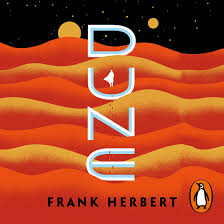
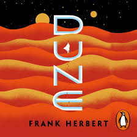
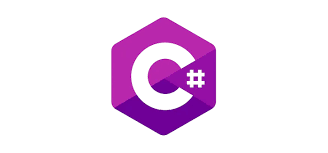
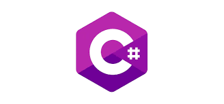
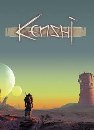
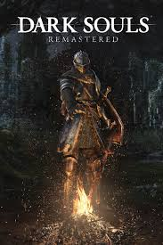
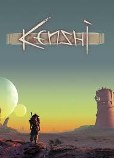
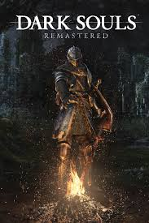

Jhan Crhistian Terrero Ramirez
Entré al area de programacion, porque siempre me gustaron las computadoras, ademas de que al probarlo hace unos años y ver que se podia crear cualquier cosa que uno se imgine (con esfuerzo y dedicacion claro), me gusto mas, actualmente me quiero dedicar al area de BackEnd, centrado en .NET y en un futuro proximo de ser posible a Java, aunque no descarto el uso de algun otro lenguaje que no sea de tipado estatico, como JS o Python.
Espero en esta materia aprender lo necesario para poder crear paginas webs responsive, las cuales sean capaces de consumir APIs y de ser adecuadas para los usuarios (me refiero al diseño). Y si es posible tambien aprender las diferentes arquitecturas del FrontEnd ya que al ver las arquitecturas como N-Capas e Onion Architecture en BackEnd no se como se usarian estas (o si hay otras) para el FrontEnd.
Leer


 

Yo normalmente leo 2 o mas libros a la vez, ya que soy alguien que se aburre leyendo con los libros de no ficcion (como Las 48 leyes del poder y La Riqueza de las naciones que son dos que estoy leyendo actualmente) son libros los cuales son para aprender, pero no siempre me mantienen enganchado, en cambio Dune y Lotum son novelas las cuales son muy gratas y me gustan bastante, he leido otros pero esos son los que tengo actualmente.
Programar cosas
 


Normalmente me gusta programar side projects que me ayudan a hacer una cosa en especifico, pero aveces son por puro ocio o incluso para crear mods de algun juego que me guste, ademas de eso tambien me gusta aprender tecnologias nuevas, aunque me siento mas comodo con las que estan orientadas al BackEnd (TS esta ahi porque lo ando aprendiendo para el FrontEnd).
Video Juegos

 



Video juegos, simplemente son divertidos, normalmente juego los que representan un desafio o tienen buena historia o ambas, mis generos preferidos son los mundo abierto y los metroidvania.
Trotar
Salgo normalmente por la tarde a trotar unos 30 min o 1 hora, intento hacerlo diario y los dias que no puedo solo le sumo unos 30 min mas al dia siguiente. Siempre alterno entre trotar 5-10 minutos y luego hacer un sprint de 1 o 3 minutos. Empeze por motivos de salud pero luego me fue gustando, aunque navidad no me lo dejo facil este mes.